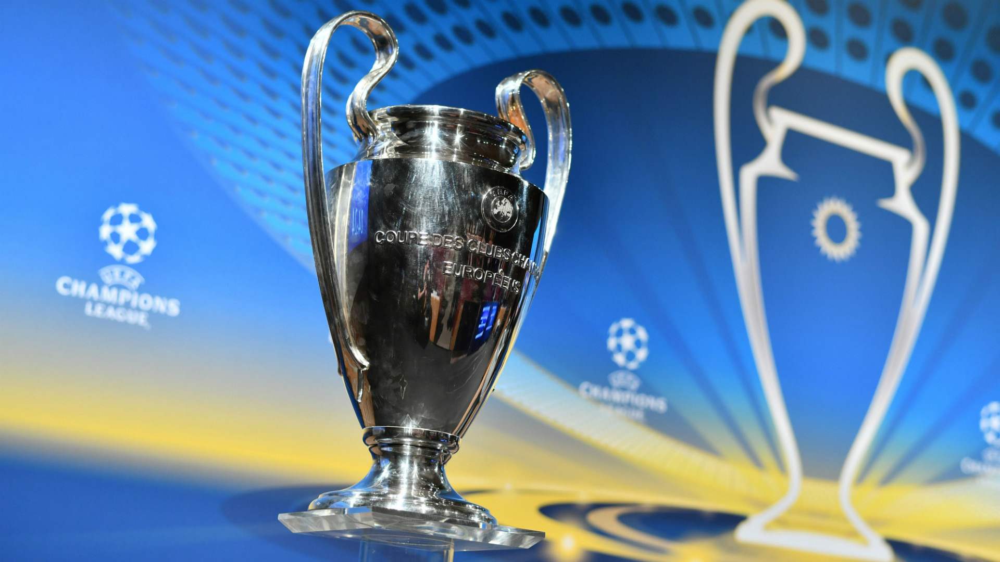

PRIZE

Each year, the winning team is presented with the European Champion Clubs' Cup, the current version of which has
been awarded since 1967. From the 1968–69 season and prior to the 2008–09 season any team that won the Champions League three years in a row or five times overall was
awarded the official trophy permanently. Each time a club achieved this a new official trophy had to be forged for the following season. Five clubs own a version of the official trophy, Real Madrid, Ajax, Bayern Munich, Milan and Liverpool. Since 2008, the official trophy has remained with UEFA and the clubs are awarded a replica.
The current trophy is 74 cm (29 in) tall and made of silver, weighing 11 kg (24 lb). It was designed by Jörg Stadelmann, a jeweler from Bern, Switzerland, after the
original was given to Real Madrid in 1966 in recognition of their six titles to date, and cost 10,000 Swiss francs.
As of the 2012–13 season, 40 gold medals are presented to the Champions League winners, and 40 silver medals to the runners-up.